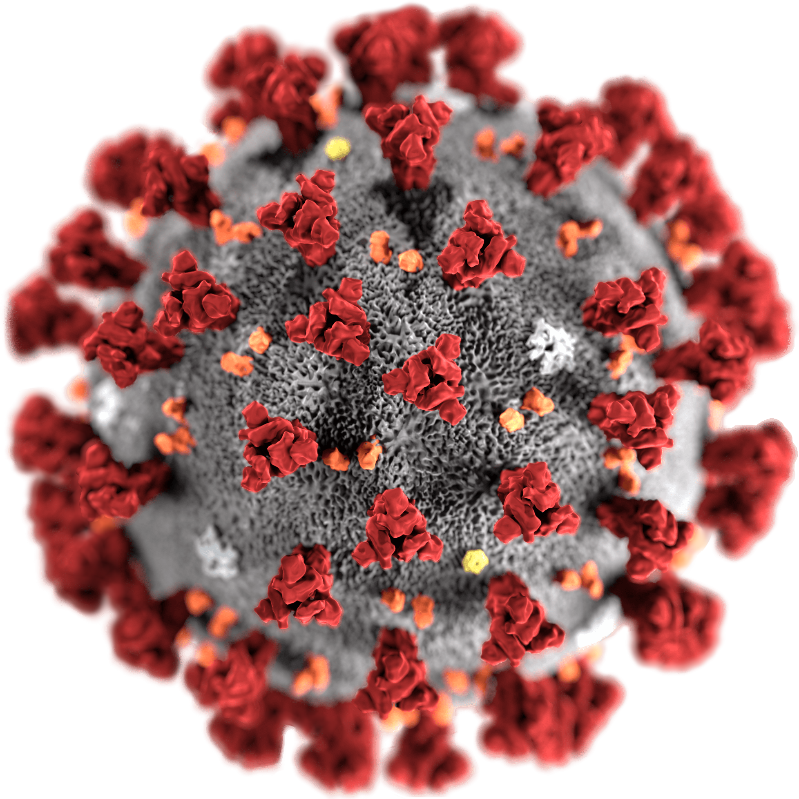

The coronavirus package provides a tidy format dataset of the 2019 Novel Coronavirus COVID-19 (2019-nCoV) epidemic. The raw data pulled from the Johns Hopkins University Center for Systems Science and Engineering (JHU CCSE) Coronavirus repository.
More details available here, and a csv format of the package dataset available here
A summary dashboard is available here

Important Note
As this an ongoing situation, frequent changes in the data format may occur, please visit the package news to get updates about those changes
Installation
Install the CRAN version:
install.packages("coronavirus")Install the Github version (refreshed on a daily bases):
# install.packages("devtools")
devtools::install_github("covid19r/coronavirus")Usage
The package contains a single dataset - coronavirus:
This coronavirus dataset has the following fields:
head(coronavirus)
#> Province.State Country.Region Lat Long date cases type
#> 1 Afghanistan 33 65 2020-01-22 0 confirmed
#> 2 Afghanistan 33 65 2020-01-23 0 confirmed
#> 3 Afghanistan 33 65 2020-01-24 0 confirmed
#> 4 Afghanistan 33 65 2020-01-25 0 confirmed
#> 5 Afghanistan 33 65 2020-01-26 0 confirmed
#> 6 Afghanistan 33 65 2020-01-27 0 confirmed
tail(coronavirus)
#> Province.State Country.Region Lat Long date cases type
#> 56457 Zhejiang China 29.1832 120.0934 2020-03-30 0 recovered
#> 56458 Zhejiang China 29.1832 120.0934 2020-03-31 1 recovered
#> 56459 Zhejiang China 29.1832 120.0934 2020-04-01 0 recovered
#> 56460 Zhejiang China 29.1832 120.0934 2020-04-02 2 recovered
#> 56461 Zhejiang China 29.1832 120.0934 2020-04-03 0 recovered
#> 56462 Zhejiang China 29.1832 120.0934 2020-04-04 1 recoveredHere is an example of a summary total cases by region and type (top 20):
library(dplyr)
summary_df <- coronavirus %>% group_by(Country.Region, type) %>%
summarise(total_cases = sum(cases)) %>%
arrange(-total_cases)
summary_df %>% head(20)
#> # A tibble: 20 x 3
#> # Groups: Country.Region [12]
#> Country.Region type total_cases
#> <chr> <chr> <int>
#> 1 US confirmed 308850
#> 2 Spain confirmed 126168
#> 3 Italy confirmed 124632
#> 4 Germany confirmed 96092
#> 5 France confirmed 90848
#> 6 China confirmed 82543
#> 7 China recovered 76946
#> 8 Iran confirmed 55743
#> 9 United Kingdom confirmed 42477
#> 10 Spain recovered 34219
#> 11 Germany recovered 26400
#> 12 Turkey confirmed 23934
#> 13 Italy recovered 20996
#> 14 Switzerland confirmed 20505
#> 15 Iran recovered 19736
#> 16 Belgium confirmed 18431
#> 17 Netherlands confirmed 16727
#> 18 France recovered 15572
#> 19 Italy death 15362
#> 20 US recovered 14652Summary of new cases during the past 24 hours by country and type (as of 2020-04-04):
library(tidyr)
coronavirus %>%
filter(date == max(date)) %>%
select(country = Country.Region, type, cases) %>%
group_by(country, type) %>%
summarise(total_cases = sum(cases)) %>%
pivot_wider(names_from = type,
values_from = total_cases) %>%
arrange(-confirmed)
#> # A tibble: 181 x 4
#> # Groups: country [181]
#> country confirmed death recovered
#> <chr> <int> <int> <int>
#> 1 US 33264 1320 4945
#> 2 France 25646 1054 1437
#> 3 Spain 6969 749 3706
#> 4 Germany 4933 169 1825
#> 5 Italy 4805 681 1238
#> 6 United Kingdom 3788 709 7
#> 7 Turkey 3013 76 302
#> 8 Iran 2560 158 1801
#> 9 Belgium 1661 140 375
#> 10 Brazil 1304 86 0
#> # … with 171 more rowsData Sources
The raw data pulled and arranged by the Johns Hopkins University Center for Systems Science and Engineering (JHU CCSE) from the following resources:
- World Health Organization (WHO): https://www.who.int/
- DXY.cn. Pneumonia. 2020. http://3g.dxy.cn/newh5/view/pneumonia.
- BNO News: https://bnonews.com/index.php/2020/02/the-latest-coronavirus-cases/
- National Health Commission of the People’s Republic of China (NHC): http:://www.nhc.gov.cn/xcs/yqtb/list_gzbd.shtml
- China CDC (CCDC): http:://weekly.chinacdc.cn/news/TrackingtheEpidemic.htm
- Hong Kong Department of Health: https://www.chp.gov.hk/en/features/102465.html
- Macau Government: https://www.ssm.gov.mo/portal/
- Taiwan CDC: https://sites.google.com/cdc.gov.tw/2019ncov/taiwan?authuser=0
- US CDC: https://www.cdc.gov/coronavirus/2019-ncov/index.html
- Government of Canada: https://www.canada.ca/en/public-health/services/diseases/coronavirus.html
- Australia Government Department of Health: https://www.health.gov.au/news/coronavirus-update-at-a-glance
- European Centre for Disease Prevention and Control (ECDC): https://www.ecdc.europa.eu/en/geographical-distribution-2019-ncov-cases
Links
- Download from CRAN at
https://cloud.r-project.org/package=coronavirus - Browse source code at
https://github.com/covid19r/coronavirus - Report a bug at
https://github.com/covid19r/coronavirus/issues
License
- Full license
- MIT + file LICENSE
Developers
- Rami Krispin
Author, maintainer